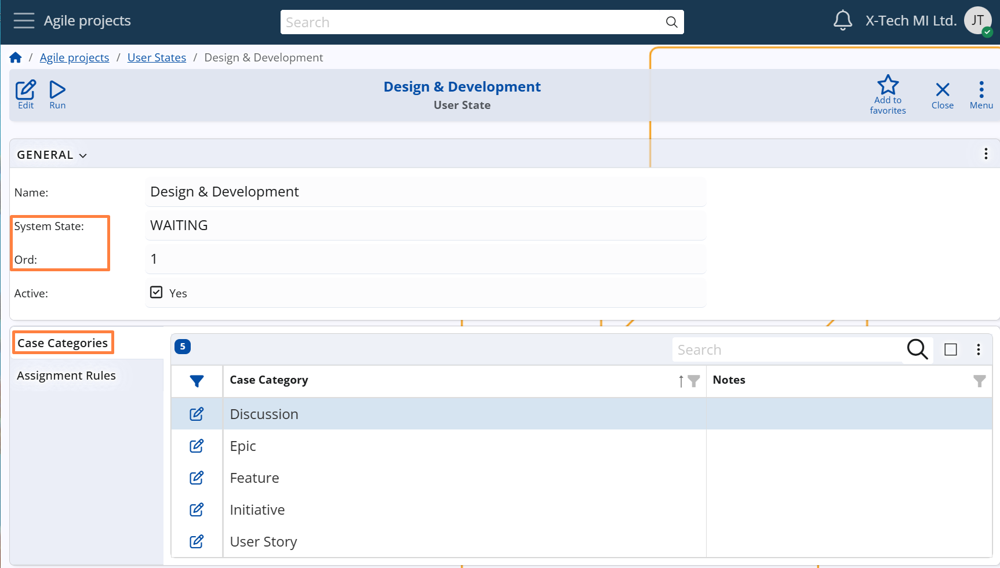

User States
In Agile PM, each Case progresses through a sequence of States that represent different phases in its lifecycle. These include both:
- System States – the default, predefined workflow stages
- User States – custom sub-stages defined by the organization to reflect internal processes
While System States represent the standard process flow, User States allow teams to extend these phases with more granular sub-stages that match their internal procedures, providing better visibility and control over the actual status of work.
For example:
The System State "Consider" may include user-defined sub-states such as:
"Needs a meeting", "For approval" and "Needs clarification".
These User States appear as dropdown options on the Case form, allowing the user to specify the exact sub-stage of the work.
Linking a User State to a System State
Each User State must be explicitly linked to a specific System State.
This defines which System State the User State extends and determines in which System State dropdown it will be available in the Case form.
Note
The CLOSED System State is an exception — it does not support its own User States.
Instead, it inherits the User State that was set when the Case was transitioned to RESOLVED.
This ensures that the final state of the Case remains consistent with how the work was completed or resolved.
Configuration path: User State definition → General panel → System State field
Display panel name: General
System panel name: User State
Ordering of User States
User States have an internal sequence within each System State. This sequence controls the order in which the User States are displayed in the dropdown menu on the Case form.
The order is managed via the Ord field:
- By default, the system assigns the next available number based on the highest existing value within the same System State.
- However, the value can be manually edited by users to adjust the display order.
A well-defined order helps guide users through a consistent and intuitive workflow.
Configuration path: User State definition → General panel → Ord field
Display panel name: General
System panel name: User State
Applying User States to Case Categories
Each User State must be made applicable to one or more Case Categories.
This ensures that the User State will be available for selection only in Cases that belong to the allowed categories.
When a Case is opened, the dropdown for the current System State will include only those User States that are:
- Linked to that System State
- Marked as applicable for the Case’s Category
This mechanism ensures contextual relevance and prevents confusion or misclassification.
Configuration path: User State definition → Case Categories panel
